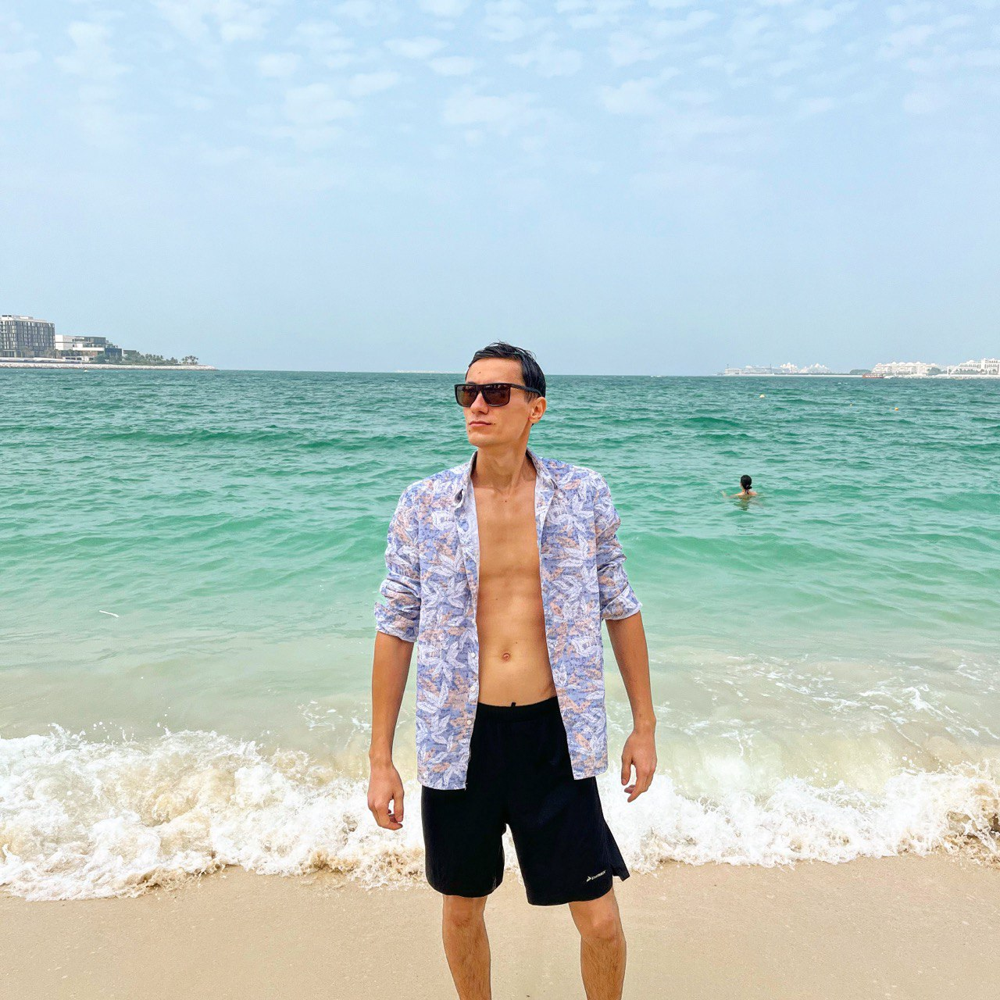

 Меня зовут Анет Маратулы. Я графический дизайнер и занимаюсь 3Д визуализацией. Работаю на Blender, PhotoShop, Illusrtator, Vectornator. Также я начинающий WEB разработчик. Данная страница одна из первых моих работ.